The Question Behind the Data
Here is something most of us would agree with: the people who run countries should probably be well educated. Presidents, prime ministers, and heads of government make decisions that affect millions of lives, so it makes sense that they would have university degrees, professional training, or advanced academic qualifications. Education feels like a natural pathway to power, and a really fair one too. Citizens all over the globe want to believe that their leaders are educated and qualified enough to help their countries succeed and protect their livelihood and safety.
But is that actually how it works? This data story puts that assumption to the test. Using a dataset that tracks 1,171 world leaders across 177 countries between 1989 and 2023, it examines what education levels at the top of global politics really look like, and what they actually reveal.
The database used here is called the Political Leaders' Affiliation Database (PLAD), compiled by researchers Bomprezzi et al. (2024). It contains 1,334 records, with some leaders appearing more than once if they served multiple separate terms in office. Each record includes the leader's education level, rated on a scale from 1 (unable to read) to 8 (doctoral degree), alongside details about their country, how they came to power, how long they stayed, and how their time in power ended.
Before any charts could be made, the raw data needed a thorough clean-up. The biggest problem was that in the spreadsheet, a dot symbol (".") was used to mark missing information. Python would then read those dots as actual data rather than blanks, which produced completely wrong results. Once that was fixed, it became clear that 82 records had no education score at all. Those gaps were slightly more common in African countries and in records from after 2015, which is worth remembering when reading the regional findings. Two spelling errors were also corrected along the way.
The chart below shows exactly where the missing data was found across the key columns used in this analysis. It is included as part of the honest process. The gaps in the data shape what can and cannot be said with confidence.
Chart 1. Where Was Data Missing?
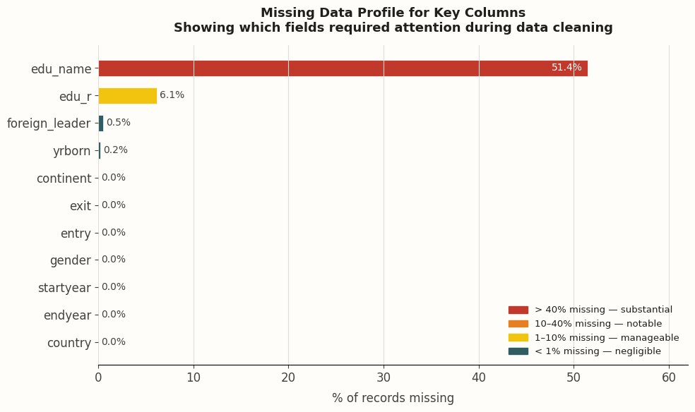
The field that records a leader's specific degree name (edu_name) was missing for more than half of all records — 51.4%. This is why the analysis focuses on the numeric education score (edu_r) rather than named degrees. The education score itself was missing for 6.1% of records (82 leaders). All other columns used in this analysis — gender, country, continent, start year, end year, and how the leader entered and left office — were nearly complete. Colour guide: red = more than 40% missing, orange = 10–40%, yellow = 1–10%, teal = less than 1%. Data: PLAD (Bomprezzi et al., 2024).
With the cleaned data in hand, four questions were explored. Each one begins with something most people would assume to be true, and each one gets a surprising answer.
First, the Big Picture
Before getting into the four questions, it helps to understand what the data looks like overall. The chart below shows how common each education level is among all world leaders in the dataset. The three tallest bars — College (457 leaders), Graduate degree (417 leaders), and Doctorate (255 leaders) — make up more than 90% of all leaders. Leaders with only a primary school education or less represent a tiny fraction. The average score across all leaders is 6.5, and the most common single level is College.
In other words: having a university degree is not what makes a world leader stand out. It is the bare minimum. Almost everyone at the top already has one.
Chart 2. How Educated Are World Leaders? The Full Breakdown
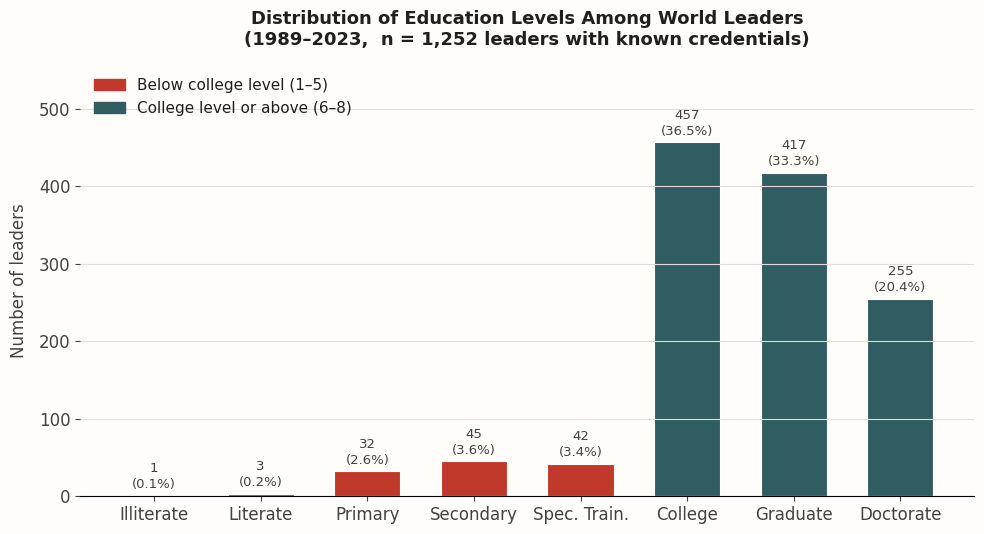
Each bar shows how many leaders fall into that education category. The scale goes from 1 (Illiterate) up to 8 (Doctorate). The red on the left (below college level) account for just 9.8% of leaders. The teal bars on the right (college and above) account for 90.2%. The average score is 6.5 and the most common level is 6 (College). Based on 1,252 leaders with a recorded education score. Data: PLAD.
The line chart below adds a time angle. It tracks how the average education level of leaders changed across the decades in different parts of the world. Back in the 1940s and 1950s, leaders generally had much lower education levels. But from the 1980s onward, the global average jumped into college-educated territory and has basically stayed there ever since. The world crossed a threshold around 1990 and never went back. One region that stands out is Africa, which made the biggest improvement of any continent: rising from an average of 6.06 in the 1990s to 6.70 in the 2020s.
Chart 3. Have Leaders Become More Educated Over Time?
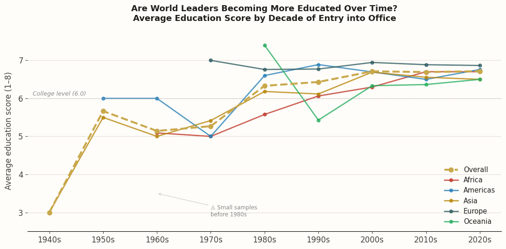
Each line tracks the average education score of leaders who came to power in that decade, separated by continent. The pattern is clear: sharp rise from the 1940s to the 1980s, then a plateau. Africa improved the most: from 6.06 in the 1990s to 6.70 in the 2020s, a bigger jump than any other region. The data points from the 1940s and 1950s are based on very small samples. Data: PLAD.
Four Questions About Education and Power
Each of the four sections below takes a common assumption about education and political leadership, and tests it against the data. You can also navigate to each question's section by clicking on one of the links below.
- Question 1 — Does a leader's education level depend on where in the world they are from?
- Question 2 — Do men and women need the same level of education to reach the top?
- Question 3 — Does having a higher degree mean you stay in power longer?
- Question 4 — Can education predict how a leader's time in power eventually ends?
Question 1: Does a Leader's Education Depend on Where They Are From?
If education were a truly equal pathway to leadership, it should look similar no matter which country a leader comes from. A university degree from Kenya should open the same doors as one from Germany. But when the data is split by continent, the picture becomes noticeably uneven.
The bar chart below shows the average education score for leaders from each continent. All five continents sit above the college level (a score of 6), which is encouraging, but they are not all the same. Europe tops the list at 6.86, while Africa and Oceania sit at 6.19. That gap of 0.67 points might sound small, but the stacked chart below it shows what it means in practice: around 18% of African leaders in this dataset did not complete a university degree, compared to almost none in Europe. Europe also has the highest share of leaders with doctorates.
Chart 4. Average Education Score — Continent by Continent
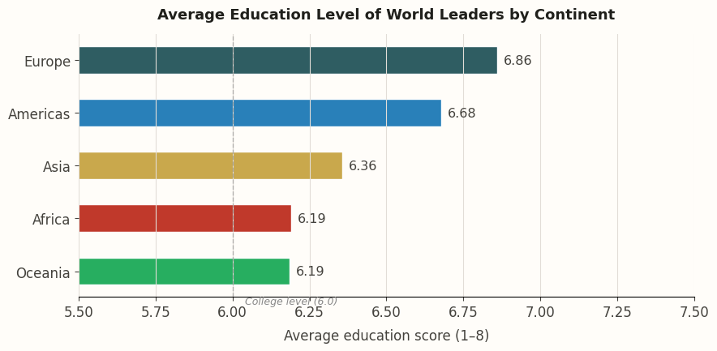
The dashed vertical line marks the college level (score of 6). Every continent clears that line, but some by much more than others. The number of leaders in the dataset per continent: Europe 429, Asia 338, Africa 277, Americas 239, Oceania 51. Data: PLAD.
Chart 5. What Mix of Education Levels Does Each Continent Have?
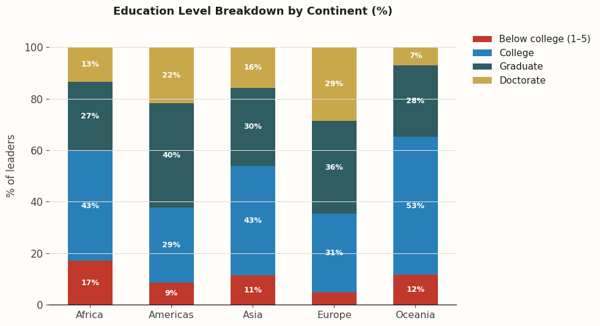
Red = below college level (scores 1–5). This is largest in Africa at roughly 18%. Gold = Doctorate level, which is largest in Europe. These differences are not just about qualifications — they reflect how different parts of the world produce their leaders and through which institutions. Data: PLAD.
The world map below paints the full geographic picture. Countries in Europe are consistently darker green/blue. Meaning their leaders had high average education scores. Malta stands out as the highest, with an average of 8.0, meaning every recorded leader held a doctorate. Greece (7.36) and Cyprus (7.33) are close behind. Large parts of Latin America also score well. But move into parts of West and Central Africa or the Middle East, and the colours shift toward red. Algeria averages 4.40, Sudan averages 4.67, and North Korea sits at just 3.00 — the lowest in the dataset.
Map 1. What Is the Typical Education Level of a Country's Leaders?
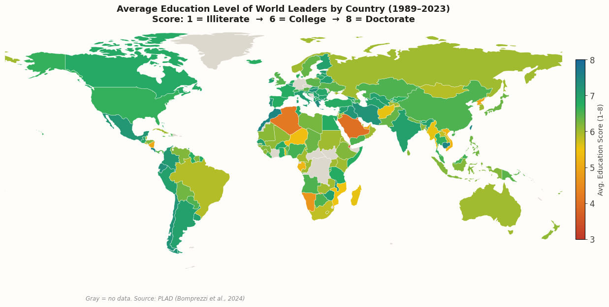
Countries are coloured by the average education score of their leaders. Red = lower scores (3–5), blue = higher scores (7–8), gray = no data available. The pattern reflects not just education systems, but also history: many countries with lower scores have experienced more political instability, limited access to university-level education, and pathways to power that run through the military rather than the classroom. Data: PLAD.
That last point about military pathways is important. Out of all 1,334 records in this dataset, 122 leaders came to power through irregular means . Meaning coups, military seizures, or foreign imposition, not elections. That is 9.1% of all records. And those irregular takeovers are not spread evenly around the world. They are concentrated in West Africa. Mali alone had five different leaders seize power by force between 1989 and 2023. This is more than any other country. Burkina Faso, Guinea-Bissau, and Niger each had four. These are countries where the democratic process repeatedly broke down, and where the military became the main route into power rather than a degree programme.
Map 2. Where Have Leaders Most Often Seized Power by Force?
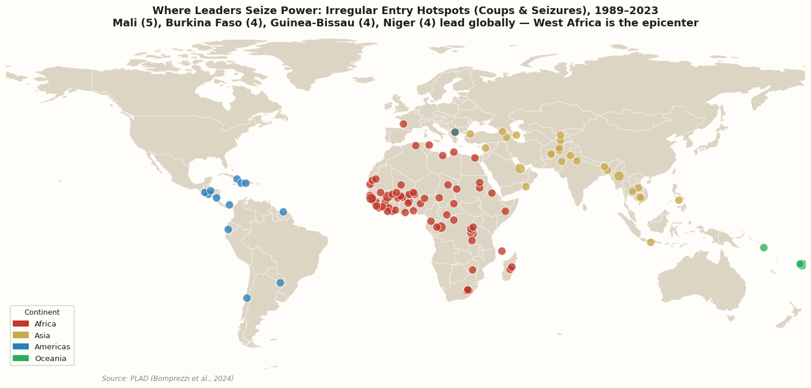
Each bubble marks a country where at least one leader came to power through a coup, a forced takeover, or foreign military imposition. Bigger bubble = more incidents. The West African cluster is the most concentrated anywhere in the world: Mali (5 incidents), Burkina Faso (4), Guinea-Bissau (4), Niger (4), Guinea (3), Lesotho (3), Sierra Leone (3). A smaller cluster appears in South and Southeast Asia, including Pakistan (3), Afghanistan (3), and Fiji (3). Data: PLAD.
Question 2: Do Men and Women Need the Same Qualifications to Reach the Top?
If education is a fair and equal ticket into political leadership, then it should work the same way regardless of whether the candidate is male or female. However, the data tells a very different story.
To start with the most basic fact: of all 1,334 leader records in this dataset, only 89 are female (that is just 6.7%). The other 93.3% are male. In 35 years, across 177 countries, the world produced roughly one female leader for every fourteen males. Whatever role education plays in getting someone to the top of government, it has clearly not been creating an equal playing field.
Chart 6. How Many World Leaders Are Women?
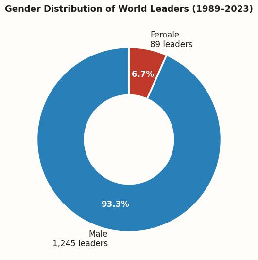
Out of 1,334 leadership records, 89 are female (6.7%) and 1,245 are male (93.3%). The chart is deliberately drawn this way so the scale of the imbalance is visible at a glance. Data: PLAD.
Chart 7. Do Male and Female Leaders Have the Same Education Levels?
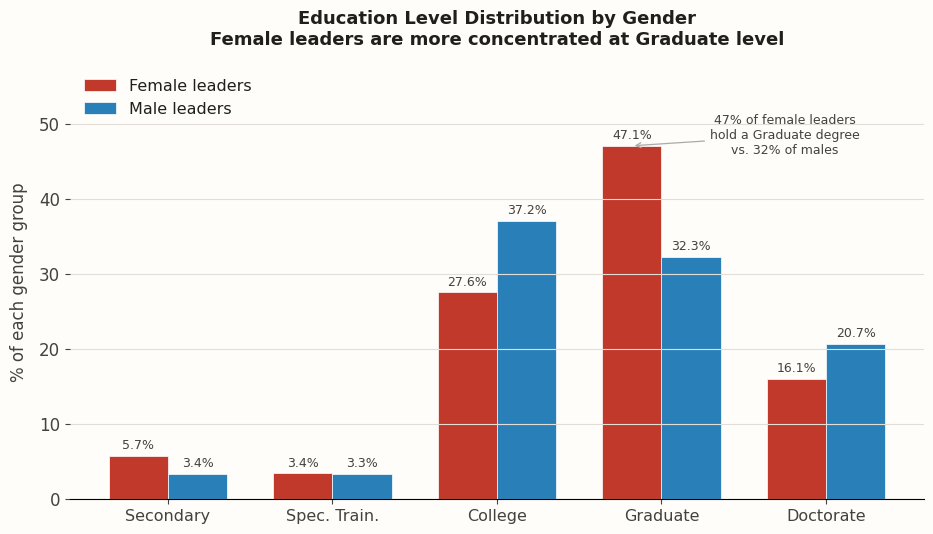
Each pair of bars shows what percentage of that gender group holds that education level. The biggest difference is at Graduate degree level: 47.1% of female leaders hold a Graduate degree, compared to just 32.3% of male leaders. Female leaders average 6.64 on the education scale; males average 6.54. Not one female leader in the entire dataset holds below a secondary school education. Data: PLAD.
Here is where it gets interesting. Despite being a tiny minority, the women who did reach political power were, on average, better qualified than their male counterparts. The average education score for female leaders is 6.64, compared to 6.54 for males. Nearly half of all female leaders, 47.1%, hold a Graduate degree, compared to only 32.3% of males. And critically, not a single woman in this entire dataset reached the top of government with less than a secondary school education, while men in the dataset extend all the way down to illiterate.
What does this mean? It means women are not getting into politics with fewer qualifications. Rather they are getting in with more, and they still represent only 6.7% of all records. The bar appears to be set higher for women than for men, even though it looks like the same bar from the outside.
Chart 8. Has the Education Gap Between Male and Female Leaders Always Looked This Way?
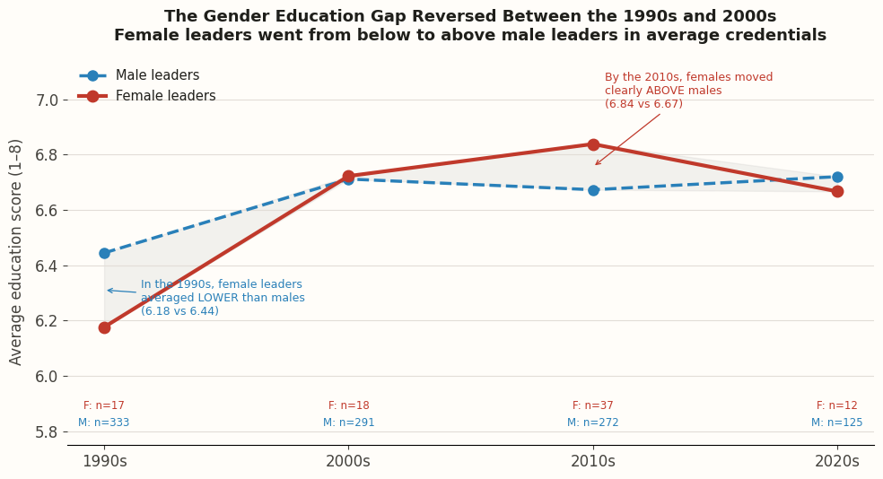
This chart tracks the average education score of male and female leaders in each decade since 1989. In the 1990s, female leaders actually averaged slightly less than males (6.18 versus 6.44). By the 2000s the lines crossed, and females pulled ahead. By the 2010s the gap was clear (6.84 for women versus 6.67 for men). Data: PLAD.
The historical shift is worth understanding. In the 1990s, many of the women who entered political leadership did so through family connections. They were daughters or wives of famous political figures, and their family name opened the door more than their degree did. Over time, those family-based pathways have narrowed. The women reaching political power today are increasingly getting there on the strength of their academic record alone. That sounds like progress, and it is. But it also means the academic standard being applied to women has quietly risen decade by decade.
Map 3. Which Countries Have Had Female Leaders?
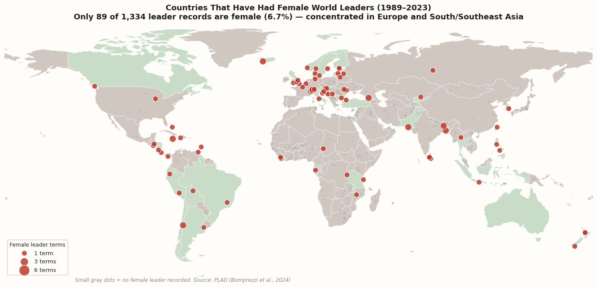
Red circles mark countries that have had at least one female leader. The bigger the circle, the more female leadership terms that country recorded. Small gray dots mark countries with no recorded female leader across the entire 35-year period. Switzerland leads with six female leadership terms (because of its rotating head-of-government structure). Most of Africa, the Middle East, Central Asia, and East Asia show no red circles at all. Data: PLAD.
Question 3: Does a Higher Degree Mean You Stay in Power Longer?
Most people, if asked, would probably say yes. A more educated leader is probably a more effective one, and effective leaders stay in office longer because voters keep re-electing them. It is a logical assumption. However, the data completely contradicts it.
The chart below shows the average number of years in office for leaders at each education level. Read it from left to right and the pattern becomes clear almost immediately. Leaders with only a primary school education averaged 12.62 years in office. Leaders with a Graduate degree averaged just 4.08 years. Doctorate holders averaged 4.38 years. The less educated the leader, the longer they typically stayed, and the gap between the least and most educated groups is nearly three to one.
Chart 9. Who Stays in Power Longest? The Surprising Answer
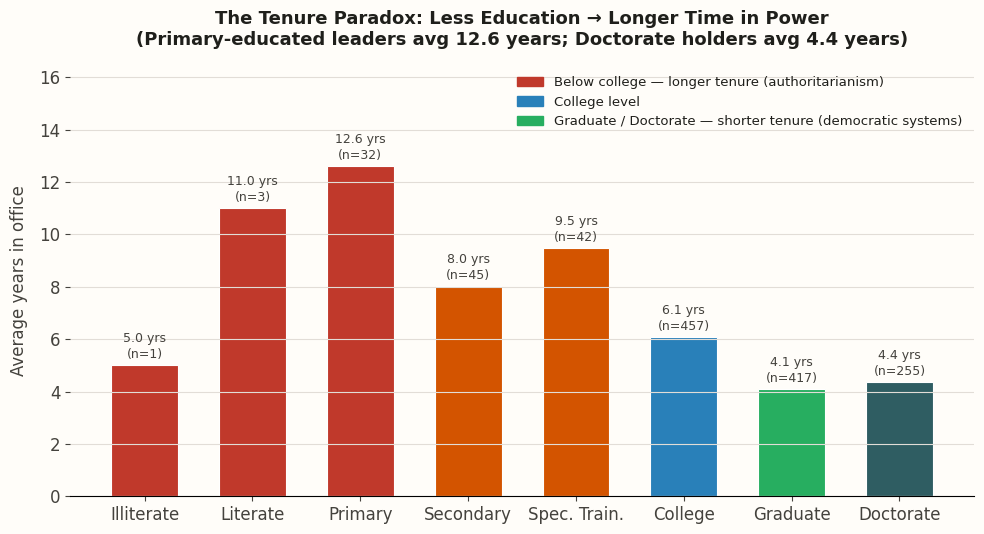
Red and orange bars represent leaders with below-college education. These groups have the longest average tenures. Teal and green bars represent college level and above. These groups leave office much sooner on average. The numbers in brackets above each bar show how many leaders are in that group (n). The Illiterate (n=1) and Literate (n=3) groups are too small to mean very much; the Primary (n=32), Secondary (n=45), and Special Training (n=42) groups are more reliable. Data: PLAD.
Chart 10. Not Just Averages — the Full Range of How Long Leaders Stay
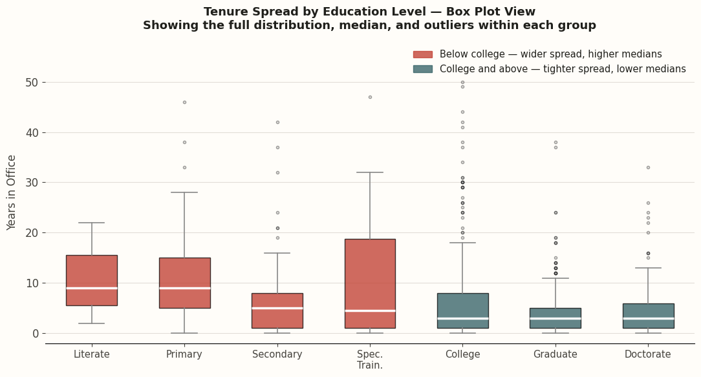
A box plot shows more than just the average. It shows the full spread of results. Each coloured box covers the middle 50% of tenures for that group; the white line is the median; and the individual dots are the outliers. The leaders who stayed far longer or shorter than typical. The red boxes (below college) are noticeably taller and positioned higher. The teal boxes (college and above) are compact and low, clustering around the 4–5 year range that matches a typical election cycle. Those gray dots floating high above the red boxes are the long-serving authoritarian leaders. Data: PLAD.
Before drawing any conclusions about whether less education makes someone a better leader, it is important to understand why this pattern exists. The answer has nothing to do with ability or performance. It is about the type of country these leaders governed.
In countries with functioning democracies, regular elections, term limits, peaceful transfers of power, leaders leave office when the voters say so. A typical term is four or five years. The most educated leaders in this dataset tend to come from exactly these kinds of countries, which is why their average tenure is short.
In countries where those democratic safeguards do not exist or have been dismantled, a leader can stay in power for as long as they can physically hold on. No election to lose, no term limit ticking down, no constitutional process to remove them. The leaders in this dataset who stayed the longest, some for 40 or 50 years, tended to come from exactly these systems, and they tended to have lower education levels. Not because they were less capable, but because those political environments did not require a high academic credential to seize and hold power.
To test this more rigorously, a method called k-means clustering was used. This is a technique that groups data points together based on similarity. When leaders were grouped by education level, age when they first took office, and years spent in power, three very distinct clusters emerged naturally from the data:
594
Educated Early Risers
Average
education score: 6.8 · Took office
around age 47 · Served about 3.9 years.
Well-educated, came to power relatively young,
served typical short democratic terms.
548
Senior Statesmen
Average
education score: 6.5 · Took office
around age 64 · Served about 3.5 years.
Similar credentials, came to power later in life,
but also left quickly.
106
Long-Serving Leaders
Average
education score: 5.1 · Took office
around age 45 · Served about 23.3 years.
Lower credentials, entered young, held power for
over two decades on average.
Chart 11. The Three Clusters — Visible on a Graph
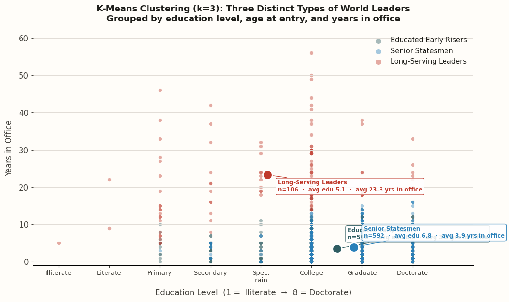
Each dot represents one leader. The colour shows which cluster the k-means algorithm assigned them to. The horizontal axis shows education level; the vertical axis shows years in office. The red cluster (Long-Serving Leaders, n=106) stands out immediately — it sits at lower education levels and very high tenure values, clearly separated from the other two groups. The teal and blue clusters are tightly bunched near the bottom, which is what you would expect from leaders in democratic systems with regular elections. The labelled dots show where the average (centre point) of each cluster sits. Clustering was performed using k=3, with variables scaled to equal weight before running the algorithm. Data: PLAD.
Chart 12. What Makes Each Cluster Different?
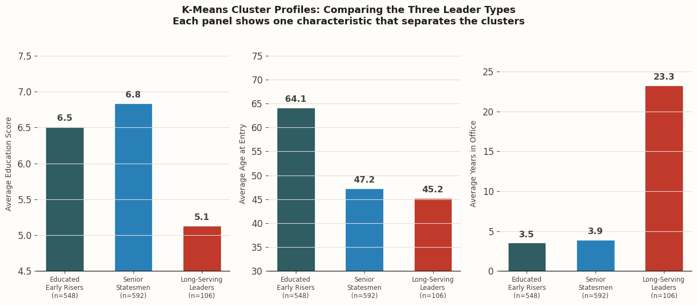
Each panel focuses on one characteristic. Left: education score — the Long-Serving Leaders clearly stand apart at 5.1. Centre: age when they first took office — the three groups are actually similar here, which means age is not what separates them. Right: average years in office — this is where the real difference shows up. Long-Serving Leaders average 23.3 years, more than six times longer than the other groups. The right panel is the clearest summary of why the tenure paradox exists. Data: PLAD.
That third cluster, the 106 Long-Serving Leader, tells the story plainly. They averaged over 23 years in power with an average education score of just 5.1. Some of the most extreme examples: Hassanal Bolkiah of Brunei held power for 56 years, Fidel Castro of Cuba for 49, Kim Il-Sung of North Korea for 46. None of them left because voters asked them to. They held on because the political system around them had no mechanism to make them leave.
Question 4: Does Education Predict How a Leader's Time in Power Eventually Ends?
The previous three questions looked at who becomes a leader, whether education works equally for men and women, and how long leaders stay in power. This final question adds one more angle that turns out to be the most unexpected finding in the entire analysis: can a leader's education level predict not just how long they stay, but specifically how their time in power comes to an end?
This question was not planned at the start of the project. It came from simply looking at the exit records in the dataset and noticing something that seemed too stark to be a coincidence. Across all 1,334 records, leaders left office in one of several ways. The full breakdown: 977 left through a regular process like an election or a term limit (73.2%). 173 were still in office when the dataset was last updated in 2023 (13.0%). 117 were removed by force (8.8%). 37 died while still in office (2.8%). 20 retired due to health problems (1.5%). And 2 were assassinated (0.1%).
Chart 13. How Do Leaders Leave Power — and Does Education Change the Answer?
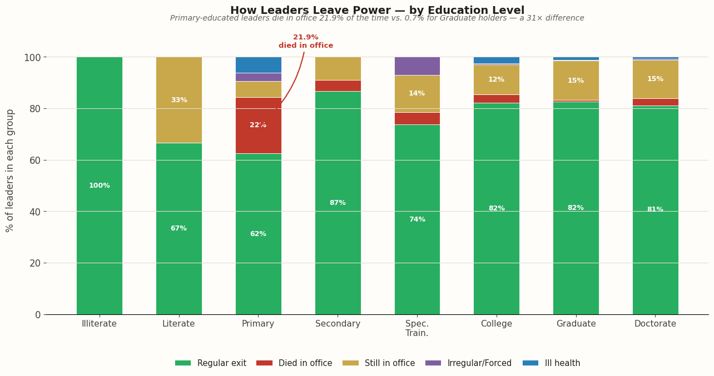
Each bar represents all leaders at that education level, broken down by how they eventually left office. Green = left through a regular process (election, term limit). Red = died in office. Gold = still in office at the 2023 dataset cutoff. Purple = removed by force. Blue = retired due to ill health. The most dramatic difference is in the red band — 21.9% at Primary level versus just 0.7% at Graduate level. That is a 31-times difference. Total across all leaders: 977 regular exits, 173 still in office, 117 forced removals, 37 died in office, 20 ill health, 2 assassinations. Data: PLAD.
Look specifically at the red section of each bar, the proportion of leaders who died while still in office. At the Primary education level, that red section is thick: 21.9% of leaders with only a primary school education died while still holding power. That is nearly one in four. Now look at the bar for Graduate degree holders. The red section is barely visible: only 0.7% of leaders with a Graduate degree died in office. That is a 31-times difference between two groups of people doing the same job.
Dying in office is not a health story. It is a political one. A leader who dies while still in power is a leader who was never removed. They were not voted out. They did not hit a term limit. They did not step down voluntarily. They held their position until the very end of their life. Which means the political system around them had no real way of making them leave. It is the most extreme version of the pattern seen in Question 3.
The gold section of the chart, leaders still in office as of 2023, reveals something additional. College-educated leaders have the highest proportion still in power (11.8%), which points to a specific group: leaders like Paul Biya of Cameroon, who has a degree from the Sorbonne and has been in power since 1982, or Omar Bongo of Gabon, who served for 42 years. These leaders were educated enough to work through the formal structures of government, but they did so in countries where those formal structures had no real power to remove them.
On the other side of the chart, the green section is dominant among leaders with Graduate and Doctorate degrees. 82.5% of Graduate level leaders and 81.2% of Doctorate holders left power through a normal process. These are the leaders of stable democracies, countries where leaving office on schedule is simply how things work.
Conclusion
Does a University Degree Really Determine Who Gets Power?
After working through four questions across 1,334 leadership records in 177 countries, the answer turns out to be both yes and no.
Yes, in the sense that a degree is now essentially required just to be taken seriously as a political candidate. Over 90% of world leaders have at least a college-level qualification. That threshold was crossed around 1990 and has held firm ever since. Without a university education, reaching the top of government has become genuinely rare.
But beyond that basic entry requirement, education stops being a reliable guide to much of anything. It does not predict how long you stay in power: primary-educated leaders averaged over 12 years in office while graduate holders averaged barely 4. It does not create an equal playing field: women need stronger credentials than men to reach the same positions, yet they are still just 6.7% of all leaders. And it does not guarantee a peaceful exit: leaders with a primary education die in office 31 times more often than leaders with a graduate degree, not because of their health, but because of the systems they governed within.
When the k-means clustering grouped all 1,246 leaders with complete data, the most striking group was the smallest: 106 Long-Serving Leaders who averaged 23.3 years in power with an education score of just 5.1. They were not there because they were uneducated. They were there because nothing could make them leave.
Data source: Political Leaders' Affiliation
Database (PLAD). Bomprezzi et al. (2024). Harvard Dataverse.
doi:10.7910/DVN/YUS575
Analysis tools: Python (pandas, numpy,
matplotlib, geopandas, scikit-learn) via Google Colab.
Course: CPSC 573 · University
of Calgary · 2026 ·
Author: Maira Khan